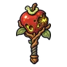

หนอนแอปเปิลเน่า · ร่างหนอนเขียว
มอนธาตุดิน Lv 10–18
เจอที่
| แมพ | โซน | Lv | ภูมิภาค |
|---|---|---|---|
| เนินแอปเปิลป่า | 10–18 | ป่ากองไฟ |
ค่าสถานะตามเลเวล
| Lv | HP | ATK | DEF | MDEF | EXP | Job |
|---|---|---|---|---|---|---|
| 10 | 1,497 | 24–36 | 3 | 3 | 29 | 22 |
| 14 | 2,268 | 31–47 | 4 | 5 | 36 | 27 |
| 18 | 2,765 | 39–58 | 5 | 6 | 43 | 32 |
ตีด้วยธาตุไหนดี
แรงขึ้น: ไฟ ×1.5 พิษ ×1.25
เบาลง: ลม ×0.5 ดิน ×0.25
วัตถุดิบที่ดรอป
| ของ | โอกาส | |
|---|---|---|
| แกนแอปเปิลเน่า | 82% | 1 ชิ้น (15% ได้ 2) |
อุปกรณ์ที่ดรอป (1)
| ของ | โอกาส |
|---|---|
 ออร์บแอปเปิลหนอนเจาะ | 0.12% |
สกิล
ทุบพื้น (Lv 25+) · ทุบพื้น (Lv 60+) · ร่างแข็ง (Lv 60+)